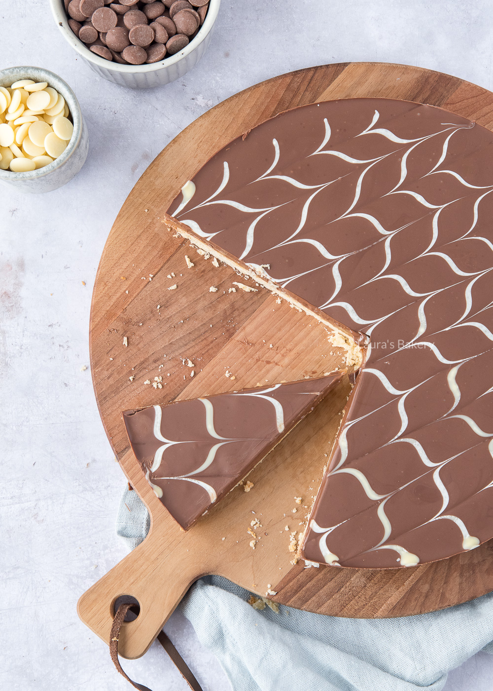

Caramel Shortcake - Recipe

Description
A nice traditional treat with shortcake, caramel and chocolate!
Ingredients
- 120 gram unsalted butter
- 55 grams sugar
- A pinch of salt
- 180 grams self raising flour
- 60 grams unsalted butter
- 1 can of condensed milk
- 4 tbps brown sugar
- 200 grams milk chocolate
- 40 grams white chocolate
Steps
The base
- Mix the butter, sugar and salt to a creamy mixture
- Add the flour is parts and mix well
- Grease a roud baking tin and fill it with the dough. Press down and prick holes in it with a fork
- Bake at 180C for 20 minutes
The caramel
- Melt the butter in a pan
- Add the condensed milk and brown sugar. Keep stirring until it disolves
- Increase the heat and keep stirring for 10 minutes
- Spread this over the cooled base and refrigerate until set
The topping
- Melt the milk chocolate in a bain marie
- When this is melted, set it aside and melt the white chocolate in a piping sack in the microwave.
- Pour the milk chocolate over the base
- Pipe the white chocolate in your desired pattern on top